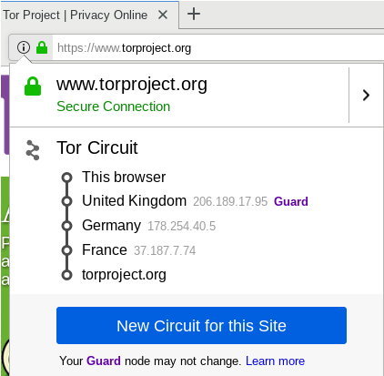

Tor Browser Adversary Model and Torbutton Design. Custom homepage, configurations and proxy settings. Tor Browser update technical details. Platform-specific issues.
Tor Browser Adversary Model
The Tor Browser design has carefully considered the goals, capabilities and types of attacks undertaken by adversaries and planned accordingly. The design specifications address:
Adversary Goals
Adversary Goals |
Description |
|---|---|
Anonymity Set Reduction (Fingerprinting) |
To identify specific individuals, system data like the browser build, timezone or display resolution is used to track down (or at least track) their activities. |
Bypassing Proxy Settings |
Directly compromising and bypassing Tor, or forcing connections to specific IP addresses. |
Correlating Activity across Multiple Sites |
Learning if the person who visited site A is the same person who visited site B, in order to serve targeted advertisements. |
Correlating Tor and Non-Tor activity |
If a proxy bypass is not possible, correlation of Tor and non-Tor activity is sought via cookies, cache identifiers, JavaScript events and Cascading Style Sheets (CSS). |
History Disclosure |
Querying user history for censored search queries or websites. |
History Records and other On-disk Information |
Seizing the computers of all Tor users in a given area and extracting history records, cache data, hostnames and disk-logged spoofed MAC address history. |
Location Information |
Seeking timezone and locality information to determine if the user originates from a specific region they are trying to control, or focusing in on dissidents or whistleblowers. |
Adversary Positioning Capabilities
Location |
Description |
|---|---|
Adservers and/or Malicious Websites |
Running websites or contracting ad space from adservers to inject content. Reducing a Tor user's anonymity is also good for marketing purposes. [5] |
Exit Node or Upstream Router |
Running exit nodes or controlling routers upstream of exit nodes. [6] |
Local Network / ISP / Upstream Router |
Injecting malicious content at the upstream router when Tor is disabled in order to correlate Tor and non-Tor activity. Additionally, block Tor or attempt to recognize traffic patterns of specific web pages at the entrance to the Tor network. |
Physical Access |
Constant or intermittent physical access to computer equipment. This may happen to Internet cafe users or those in jurisdictions where equipment is confiscated due to general suspicion or solely for Tor use. |
Adversary Attack Capabilities
 Warning: Advanced adversaries have numerous
surveillance methods and attack vectors to deanonymize and spy on
individuals.
Warning: Advanced adversaries have numerous
surveillance methods and attack vectors to deanonymize and spy on
individuals.
Attack Capabilities |
Description |
|---|---|
Inserting CSS |
|
Inserting JavaScript |
|
Inserting or Exploiting Plugins |
|
Reading and Inserting Identifiers |
|
Other Attacks |
|
Torbutton Design
With the release of
Tor Browser 9.0 in late-2019, both the Torbutton and Tor Launcher
extensions have been tightly integrated into Tor Browser, meaning
Torbutton has been moved from the URL bar and neither appears on the about:addons page. Other changes
include the New Identity function shifting to the URL bar and the New
Tor Circuit function being accessible via the hamburger menu. As noted
by Tor developers:
Now that the Tor Browser includes a patched version of Firefox, and because we don't have enough developer resources to keep up with the accelerated Firefox release schedule, the toggle model of Torbutton is no longer supported. Users should be using Tor Browser, not installing Torbutton themselves.
No functionality has been lost -- Torbutton's functions in Tor Browser behavior have simply moved into direct Firefox patches [9] which address the following dimensions.
Feature |
Description |
|---|---|
Anonymity Set Preservation |
Tor Browser should not leak any other anonymity set reducing or fingerprinting information (such as user agent, extension presence, and resolution information) automatically via Tor. |
Disk Avoidance |
Tor Browser should not write any Tor-related state to disk, or store it in memory beyond one Tor toggle. |
Interoperability |
Tor Browser should inter-operate with third-party proxy switchers that enable the user to switch between a number of different proxies, with full Tor protection. |
Location Neutrality |
Tor Browser should not leak location-specific information, like the timezone or locale via Tor. |
Proxy Obedience |
Tor Browser must not bypass Tor proxy settings. |
State Separation |
Cookies, cache, history, DOM storage, and more accumulated in one Tor state must not be accessible via the network in another Tor state. |
Update Safety |
Tor Browser should not perform unauthenticated updates or upgrades via Tor. |
Tor Browser patches and the integrated Torbutton features can potentially disable some functionality or interfere with the proper operation of some Internet sites, but the vast majority of websites work well. To learn more about former Torbutton, see:
- The Torbutton homepage
- The Torbutton FAQ
- Torbutton Design Documentation
- The Torbutton function design section immediately below.
New Identity Design
The Tor Browser design document describes the full features provided by this extension: [12] [13]
- Disables JavaScript and plugins on all tabs and windows.
- Stops all page activity for each tab.
- Clears the Tor Browser state:
- OCSP state.
- Content and image cache.
- Site-specific zoom.
- Cookies and DOM storage.
- The safe browsing key.
- Google Wi-Fi geolocation token.
- Last opened URL preference (if it exists).
- Searchbox and findbox text.
- Purge session history.
- HTTP authentication.
- SSL session IDs.
- Crypto tokens.
- Site-specific content preferences.
- Undo tab history.
- Offline storage.
- Domain isolator state.
- NoScript's site and temporary permissions.
- All other browser site permissions.
- Closes all remaining HTTP keep-alive connections.
- Sends Tor the "newnym" signal to issue a new Tor circuit.
After this process above, a fresh browser window is opened and the current browser window is closed (this does not spawn a new Firefox process, only a new window). When the final window is closed, any blob:UUID URLs that were created by websites are purged. [13]
While there is no Tor running inside Whonix-Workstation, this is still possible. anon-ws-disable-stacked-tor redirects the connection to Whonix-Gateway, where onion-grater (user documentation) (onion-grater (developer documentation)) is running, forwarding it to Tor.
New Tor Circuit Design
The "New Tor Circuit for this Site" feature sends the "newnym" signal to the Tor control port to cause a new circuit to be created for the current Tor Browser tab. [14] Other open tabs and windows from the same website will use the new circuit as well once they have reloaded, but connections to other websites on separate tabs are not affected. [15]
Security Slider Design
The Security Level preference tab and Tor Project manual describe the exact effect of each level and which features are disabled or partially disabled. Note that as of Tor Browser release v8.5, the security slider function has shifted from Torbutton to the taskbar ("shield" icon). [16] [17]
Setting |
Description |
|---|---|
Standard |
|
Safer |
|
Safest |
|
Disabled Tor Browser Functions
Open Network Settings
 Whonix has modified environment variables to prevent visibility of the
"Open Network Settings..." menu option in Tor Browser.
Whonix has modified environment variables to prevent visibility of the
"Open Network Settings..." menu option in Tor Browser.
The regular Tor Browser Bundle from The Tor Project (without Whonix) allows networking settings to be changed inside Tor via the Open Network Settings menu option. It has the same effect as editing Tor's torrc configuration file.
In Whonix, the environment variable export
TOR_NO_DISPLAY_NETWORK_SETTINGS=1 has been set
to disable the Tor Browser ->
Open Network Settings... menu item. It is not useful and
confusing to have in the Whonix-Workstation™ because:
[19] [20]
- In Whonix, there is only limited access to Tor's control port (see onion-grater (Control Port Filter Proxy) for more information).
- For security reasons, Tor must be manually configured via /usr/local/etc/torrc.d/50_user.conf in Whonix-Gateway™, and not inside Whonix-Workstation (see VPN/Tunnel support for more information).
Tor Circuit View
 Whonix has removed the Tor Circuit View from Tor Browser for security
reasons.
Whonix has removed the Tor Circuit View from Tor Browser for security
reasons.
Normally this option in Tor Browser shows the three Tor relays used for the website in the current tab. This includes the IP addresses of each and the countries they are located in, and whether a bridge is being used (see below). The node immediately above the destination website reflects the Tor exit relay. [21]
Figure: Tor Circuit View - Disabled in Whonix [22]

The onion-grater (Control Port Filter Proxy) configuration in Whonix intentionally does not whitelist the Tor control protocol commands that would be required for Tor Circuit View to function. This information is made unavailable to Whonix-Workstation because Whonix-Workstation should not have access to IP address information. If unavailable it cannot leak. Otherwise malicious or broken applications could leak it. Users might also unintentionally make screenshots of this information. One of the main advantages of Whonix is, that there is no way to determine the real external IP address of the user from within Whonix-Workstation. Therefore also the IP address of the Tor entry guard or bridge as well as Tor middle relay should be inaccessible from Whonix-Workstation. Otherwise this information might aid an attacker who gained remote code execution capability within Whonix-Workstation.
If you want to help fix the Tor Button Circuit view, read more on Dev/onion-grater#Circuit_View.
Saving Files in Shared Folder
Saving downloaded files in the shared folder is no longer trivially
possible due to the now
pre-installed Tor Browser
 [Broken-ExtLink--no-url-was-provided] profile for Tor Browser
AppArmor Confinement.
[Broken-ExtLink--no-url-was-provided] profile for Tor Browser
AppArmor Confinement.
If the user wants to save files in the shared folder, there are multiple options. Choose one.
- A) Saving files in
/home/user/Downloadsfolder instead as per Navigating Tor Browser Downloads and then move the files from there to the shared folder. - B) Modify the Tor Browser AppArmor profile
/etc/apparmor.d/home.tor-browser.firefoxby addition of an additional permission in the local/etc/apparmor.d/local/home.tor-browser.firefoxfile. See Tor Browser AppArmor Permit Shared Folder. - C) Attempt the
 [Broken-ExtLink--no-url-was-provided] instructions once this issue has
appeared. Unsupported.
[Broken-ExtLink--no-url-was-provided] instructions once this issue has
appeared. Unsupported. - D) Deactivate the Tor Browser AppArmor profile. Recommended against since this lowers security.
- E) Deactivate AppArmor. Recommended against since totally unnecessary and since this lowers security.
Tor Browser AppArmor Permit Shared Folder
By applying the following instructions, Tor Browser write access to
folder /mnt/shared folder would be permitted by
AppArmor.
1
Open file /etc/apparmor.d/local/home.tor-browser.firefox in
an editor with administrative ("root") rights.
1 Select your platform.

2 Notes.
- Sudoedit guidance: See
[Broken-ExtLink--no-url-was-provided] for details on why using
sudoeditimproves security and how to use it. - Editor requirement: Close Featherpad (or the chosen text
editor) before running the
sudoeditcommand.
3 Open the file with root rights.
sudoedit /etc/apparmor.d/local/home.tor-browser.firefox

2 Notes.
- Sudoedit guidance: See
[Broken-ExtLink--no-url-was-provided] for details on why using
sudoeditimproves security and how to use it. - Editor requirement: Close Featherpad (or the chosen text
editor) before running the
sudoeditcommand. - Template requirement: When using Qubes-Whonix, this must be done inside the Template.
3 Open the file with root rights.
sudoedit /etc/apparmor.d/local/home.tor-browser.firefox
4 Notes.
- Shut down Template: After applying this change, shut down the Template.
- Restart App Qubes: All App Qubes based on the Template need to be restarted if they were already running.
- Qubes persistence: See also
[Broken-ExtLink--no-url-was-provided]
- General procedure: This is a general procedure required for Qubes and is unspecific to Qubes-Whonix.

2 Notes.
- Example only: This is just an example. Other tools could achieve the same goal.
- Troubleshooting and alternatives: If this example does not work for you, or if you are not using Whonix, please refer to Open File with Root Rights.
3 Open the file with root rights.
sudoedit /etc/apparmor.d/local/home.tor-browser.firefox
2 Paste.
/mnt/shared r, /mnt/shared** rwl,
3 Reload the Tor Browser AppArmor profile.
Note: The following filename is different from above and correct. [23]
sudo aa-enforce /etc/apparmor.d/home.tor-browser.firefox
4 Done.
Tor Browser should now have write access to the
/mnt/shared folder.
KeePassXC Browser Extension
Untested / unsupported.
Discouraged because this might change the browser fingerprint, see Non-default Add-ons.
KeePassXC Browser Extension developers did, at the time of writing, not address bug report Problems with Tor Browser integration on Linux. This issue is unspecific to Whonix.
1
Open file /etc/apparmor.d/local/home.tor-browser.firefox in
an editor with administrative ("root") rights.
1 Select your platform.

2 Notes.
- Sudoedit guidance: See
[Broken-ExtLink--no-url-was-provided] for details on why using
sudoeditimproves security and how to use it. - Editor requirement: Close Featherpad (or the chosen text
editor) before running the
sudoeditcommand.
3 Open the file with root rights.
sudoedit /etc/apparmor.d/local/home.tor-browser.firefox

2 Notes.
- Sudoedit guidance: See
[Broken-ExtLink--no-url-was-provided] for details on why using
sudoeditimproves security and how to use it. - Editor requirement: Close Featherpad (or the chosen text
editor) before running the
sudoeditcommand. - Template requirement: When using Qubes-Whonix, this must be done inside the Template.
3 Open the file with root rights.
sudoedit /etc/apparmor.d/local/home.tor-browser.firefox
4 Notes.
- Shut down Template: After applying this change, shut down the Template.
- Restart App Qubes: All App Qubes based on the Template need to be restarted if they were already running.
- Qubes persistence: See also
[Broken-ExtLink--no-url-was-provided]
- General procedure: This is a general procedure required for Qubes and is unspecific to Qubes-Whonix.

2 Notes.
- Example only: This is just an example. Other tools could achieve the same goal.
- Troubleshooting and alternatives: If this example does not work for you, or if you are not using Whonix, please refer to Open File with Root Rights.
3 Open the file with root rights.
sudoedit /etc/apparmor.d/local/home.tor-browser.firefox
2 Paste.
/usr/bin/keepassxc-proxy rix, /home/user/.local/share/torbrowser/tbb/x86_64/tor-browser_en-US/Browser/TorBrowser/Data/Browser/.mozilla/native-messaging-hosts/org.keepassxc.keepassxc_browser.json rix,
3 Save.
4 Reload the Tor Browser AppArmor profile.
sudo aa-enforce /etc/apparmor.d/home.tor-browser.firefox
5
Symlink the KeePassXC extension's .mozilla folder to the
Tor Browser's folder.
ln -s /home/user/.local/share/torbrowser/tbb/x86_64/tor-browser_en-US/Browser/TorBrowser/Data/Browser/.mozilla /home/user/.tb/tor-browser/Browser/TorBrowser/Data/Browser
6 Done.
KeePassXC Browser Extension permissions and the symlink should now be configured.
See also:
- https://forums.whonix.org/t/keepassxc-browser-doesnt-work-out-of-the-box/16877
- https://github.com/keepassxreboot/keepassxc-browser/issues/1399#issuecomment-1246145118
- connection to KeePassXC breaks after Tor Browser updated itself (describes symlink workaround)
- https://github.com/keepassxreboot/keepassxc-browser/issues/281
- https://github.com/keepassxreboot/keepassxc/issues/10866
Custom Homepage
It is unclear whether setting a custom homepage in Tor Browser settings will currently work. Previous attempts lead to the Whonix default homepage being loaded on startup, even though a different homepage was manually set. The custom homepage only appeared following use of the New Identity function. [24]
The whonix-welcome-page package currently sets the environment variable TOR_DEFAULT_HOMEPAGE to /usr/share/homepage/whonix-welcome-page/whonix.html when setting the Tor Browser homepage. This is done via the bash script file [25] associated with the package. In light of this design, there are three possible options for a user-set custom homepage (untested):
- Attempting to purge the whonix-welcome-page package. [26] This solution is difficult due to technical limitations as explained on the Whonix Debian Packages page.
- Modifying /usr/lib/whonix-welcome-page/env_var.sh. [27] Unfortunately these changes will revert after an upgrade.
- Setting the environment variable TOR_DEFAULT_HOMEPAGE to a custom value. This would have a similar effect as setting environment variables as outlined in Tor Browser Transparent Proxying.
A recent forum discussion in relation to this topic can be found here.
Custom Configurations
 Custom configurations is an advanced topic. Only a small minority will
ever need to apply the steps in this section.
Custom configurations is an advanced topic. Only a small minority will
ever need to apply the steps in this section.
Verify New Identity
 Usually this action is only necessary for custom configurations, like
when using a Whonix-Custom-Workstation™.
Usually this action is only necessary for custom configurations, like
when using a Whonix-Custom-Workstation™.
If attempts to create a New Identity fail, then a related Tor Browser notification should appear once it realizes it cannot connect to Tor's ControlPort. If this error notification does not appear, then it likely means there are no problems.
After Tor Browser is restarted, click "IP Check" on the landing page. This will redirect to https://check.torproject.org automatically, but the URL can be manually entered if preferred. In most, but not all cases [28] a new Tor exit relay will be received, with a different IP address being reported.
On Whonix-Gateway, examine the onion-grater (Control Port Filter Proxy) log while using Tor Browser's New Identity feature.
sudo journalctl -f -u onion-grater
If the output is similar to the following.
Aug 16 05:30:19 host onion-grater[2316]: 10.137.0.10:41334 (filter: 30_autogenerated): → SIGNAL NEWNYM
Aug 16 05:30:19 host onion-grater[2316]: 10.137.0.10:41334 (filter: 30_autogenerated): <- 250 OKThen the Control Port Filter Proxy received both the request from Tor Browser and Tor confirmation that it worked.
Get a New Identity without Tor ControlPort Access
 This action is usually only needed for custom configurations, like when
not using the onion-grater
(Control Port Filter Proxy).
This action is usually only needed for custom configurations, like when
not using the onion-grater
(Control Port Filter Proxy).
Simulate Tor Browser's New Identity functionality via these steps.
- Close Tor Browser.
- Get a new identity in Whonix-Gateway using nyx.
- Start Tor Browser again.
The procedure is complete.
Proxy Settings
 These steps are usually only needed for advanced tunneling
scenarios.
These steps are usually only needed for advanced tunneling
scenarios.
Remove Proxy Settings
To remove Tor Browser proxy settings (set no proxy), apply the following instructions.
Introduction
This configuration results in Tor Browser no longer using proxy settings. With no proxy set, Tor Browser uses the (VM) system's default networking. This is identical to any other application inside Whonix-Workstation™ that has not been explicitly configured to use Tor via socks proxy settings or a socksifier. This setting is also called transparent torification. [29] [30]
 Why is this difficult?
Why is this difficult?
This is difficult and may not work for you.
To learn why this is difficult, please press on Expand on the right.
Tor Browser, which is developed by upstream, The Tor Project (TPO), an independent entity has hard configured to use Tor as a proxy.
- Upstream does not support user using Tor Browser with an additional
extra proxy at the end of the chain, i.e.:
user->Tor->proxy->destination - Upstream does also not support using Tor Browser with a proxy other
than Tor, i.e.:
user->custom proxy->destination. This may or may not currently be possible but upstream does not provide documentation on how to do this. - Upstream does also not support using Tor Browser with a VPN instead
of Tor, i.e.
user->VPN->destination. - Upstream does also not support using Tor Browser with a VPN in
addition before Tor, i.e.
user->Tor->VPN->destination.
That makes sense from TPO's perspective as a project that maintains a browser that should always connect using the Tor network. Due to that perspective, proxy settings have been removed from Tor Browser to avoid user confusion and accidental misconfiguration. Little attention is spend on custom proxy settings. That, from TPO's perspective is assumed to only make sense for users using a Tor transparent proxy and that are already running Tor on a different computer in their LAN. Only a minority of users is using such configurations.
Because of this organisational and technical background, the highly
specialized use case of configuring Tor Browser running inside
Whonix-Workstation™ to use an additional proxy
(user -> Tor -> proxy ->
destination) is difficult to accomplish.
To learn more about this organisational and technical background see
also
 [Broken-ExtLink--no-url-was-provided]
[Broken-ExtLink--no-url-was-provided]
 COMMUNITY SUPPORT ONLY : THIS wiki CHAPTER
only is only supported by the community. Whonix developers
are very unlikely to provide free support for this
content. See Community
Support for further information, including implications and possible
alternatives.
COMMUNITY SUPPORT ONLY : THIS wiki CHAPTER
only is only supported by the community. Whonix developers
are very unlikely to provide free support for this
content. See Community
Support for further information, including implications and possible
alternatives.
Note: This action will break both Stream Isolation for Tor Browser and Tor Browser's SOCKS username for a request based on first party domain feature. This worsens the web fingerprint and leads to pseudonymous (not anonymous) connections. To mitigate these risks, consider using More than one Tor Browser in Whonix, or preferably Multiple Whonix-Workstation™.
Local socks proxy Method'''
This method works for removal of proxy settings but is rather lengthy and complicated. In case the user wants to have a look anyhow, please press on Expand on the right.
Since other methods to configure Tor Browser to use system default
networking are broken due to Tor Browser changes by upstream, this new
local socks proxy method stops anon-ws-disable-stacked-tor local port
9150 redirection to Whonix-Gateway™
9150 (where a Tor SocksPort is listening). As
a replacement, a local socks proxy listens on Whonix-Workstation local
port 9150 which then forwards the traffic using system
default networking. In result, if the user is using a VPN inside
Whonix-Workstation or in a VPN-Gateway wretched between
Whonix-Gateway™ and Whonix-Workstation, Tor Browser would use
the VPN.
In this documentation, Dante is used as a local socks proxy. Development notes are kept on Dev/Dante.
1. Legacy notices.
- New users, that did not apply instructions from this page again: No special notice.
- Existing users: See below.
A few settings need to be undone.
- A) Previous changes to
/etc/environmentas documented previously for other methods need to be undone. - B) Tor Browser needs to be re-installed. This is because undoing the previous configuration is difficult and undocumented.
2. Stop default anon-ws-disable-stacked-tor service for port 9150.
- Non-Qubes-Whonix: In Whonix-Workstation.
- Qubes-Whonix: In
whonix-workstation-18Template.
sudo systemctl stop anon-ws-disable-stacked-tor_autogen_port_9150.socket sudo systemctl stop anon-ws-disable-stacked-tor_autogen_port_9150.service sudo systemctl stop anon-ws-disable-stacked-tor_autogen__run_anon-ws-disable-stacked-tor_127.0.0.1_9150.sock.socket sudo systemctl stop anon-ws-disable-stacked-tor_autogen__run_anon-ws-disable-stacked-tor_127.0.0.1_9150.sock.service
3. Prevent default anon-ws-disable-stacked-tor systemd unit from starting.
- Non-Qubes-Whonix: In Whonix-Workstation.
- Qubes-Whonix: In
whonix-workstation-18Template.
sudo systemctl mask anon-ws-disable-stacked-tor_autogen_port_9150.socket sudo systemctl mask anon-ws-disable-stacked-tor_autogen_port_9150.service sudo systemctl mask anon-ws-disable-stacked-tor_autogen__run_anon-ws-disable-stacked-tor_127.0.0.1_9150.sock.socket sudo systemctl mask anon-ws-disable-stacked-tor_autogen__run_anon-ws-disable-stacked-tor_127.0.0.1_9150.sock.service
4. Install the local socks proxy server.
- Non-Qubes-Whonix: In Whonix-Workstation.
- Qubes-Whonix: In
whonix-workstation-18Template.
A) Enable Debian source repository.
Open file /etc/apt/sources.list.d/debian.sources in an
editor with administrative ("root") rights.
1 Select your platform.

2 Notes.
- Sudoedit guidance: See
[Broken-ExtLink--no-url-was-provided] for details on why using
sudoeditimproves security and how to use it. - Editor requirement: Close Featherpad (or the chosen text
editor) before running the
sudoeditcommand.
3 Open the file with root rights.
sudoedit /etc/apt/sources.list.d/debian.sources

2 Notes.
- Sudoedit guidance: See
[Broken-ExtLink--no-url-was-provided] for details on why using
sudoeditimproves security and how to use it. - Editor requirement: Close Featherpad (or the chosen text
editor) before running the
sudoeditcommand. - Template requirement: When using Qubes-Whonix, this must be done inside the Template.
3 Open the file with root rights.
sudoedit /etc/apt/sources.list.d/debian.sources
4 Notes.
- Shut down Template: After applying this change, shut down the Template.
- Restart App Qubes: All App Qubes based on the Template need to be restarted if they were already running.
- Qubes persistence: See also
[Broken-ExtLink--no-url-was-provided]
- General procedure: This is a general procedure required for Qubes and is unspecific to Qubes-Whonix.

2 Notes.
- Example only: This is just an example. Other tools could achieve the same goal.
- Troubleshooting and alternatives: If this example does not work for you, or if you are not using Whonix, please refer to Open File with Root Rights.
3 Open the file with root rights.
sudoedit /etc/apt/sources.list.d/debian.sources
Find and edit the following stanza (around lines 69-74).
Types: deb-src URIs: tor+https://deb.debian.org/debian Suites: trixie trixie-updates trixie-backports Components: main contrib non-free non-free-firmware Enabled: yes # <<<<< change this line from "no" to "yes" Signed-By: /usr/share/keyrings/debian-archive-keyrings.gpg
Save and exit.
sudo apt update
B) Install build dependencies.
sudo apt build-dep dante-server
C) Get dante source code.
apt-get source dante-server
D) Open the dante accesscheck.c source file.
mousepad ~/dante-1.4.2+dfsg/sockd/accesscheck.c
Paste the contents. Here we rewrite the authentication method to always return true. For the reasons see Dev/Dante.
/*
* Copyright (c) 1997, 1998, 1999, 2000, 2001, 2002, 2003, 2005, 2006, 2008,
* 2009, 2010, 2011, 2012, 2013
* Inferno Nettverk A/S, Norway. All rights reserved.
*
* Redistribution and use in source and binary forms, with or without
* modification, are permitted provided that the following conditions
* are met:
* 1. The above copyright notice, this list of conditions and the following
* disclaimer must appear in all copies of the software, derivative works
* or modified versions, and any portions thereof, aswell as in all
* supporting documentation.
* 2. All advertising materials mentioning features or use of this software
* must display the following acknowledgement:
* This product includes software developed by
* Inferno Nettverk A/S, Norway.
* 3. The name of the author may not be used to endorse or promote products
* derived from this software without specific prior written permission.
*
* THIS SOFTWARE IS PROVIDED BY THE AUTHOR ``AS IS'' AND ANY EXPRESS OR
* IMPLIED WARRANTIES, INCLUDING, BUT NOT LIMITED TO, THE IMPLIED WARRANTIES
* OF MERCHANTABILITY AND FITNESS FOR A PARTICULAR PURPOSE ARE DISCLAIMED.
* IN NO EVENT SHALL THE AUTHOR BE LIABLE FOR ANY DIRECT, INDIRECT,
* INCIDENTAL, SPECIAL, EXEMPLARY, OR CONSEQUENTIAL DAMAGES (INCLUDING, BUT
* NOT LIMITED TO, PROCUREMENT OF SUBSTITUTE GOODS OR SERVICES; LOSS OF USE,
* DATA, OR PROFITS; OR BUSINESS INTERRUPTION) HOWEVER CAUSED AND ON ANY
* THEORY OF LIABILITY, WHETHER IN CONTRACT, STRICT LIABILITY, OR TORT
* (INCLUDING NEGLIGENCE OR OTHERWISE) ARISING IN ANY WAY OUT OF THE USE OF
* THIS SOFTWARE, EVEN IF ADVISED OF THE POSSIBILITY OF SUCH DAMAGE.
*
* Inferno Nettverk A/S requests users of this software to return to
*
* Software Distribution Coordinator or sdc@inet.no
* Inferno Nettverk A/S
* Oslo Research Park
* Gaustadalléen 21
* NO-0349 Oslo
* Norway
*
* any improvements or extensions that they make and grant Inferno Nettverk A/S
* the rights to redistribute these changes.
*
*/
- include "common.h"
static const char rcsid[] = "$Id: accesscheck.c,v 1.89 2013/10/27 15:24:42 karls Exp $";
int usermatch(auth, userlist)
const authmethod_t *auth;
const linkedname_t *userlist;
{ /* const char *function = "usermatch()"; */
const char *name;
if ((name = authname(auth)) == NULL)
return 0; /* no username, no match. */
do
if (strcmp(name, userlist->name) == 0)
break;
while ((userlist = userlist->next) != NULL);
if (userlist == NULL)
return 0; /* no match. */
return 1;
}
int groupmatch(auth, grouplist)
const authmethod_t *auth;
const linkedname_t *grouplist;
{
const char *function = "groupmatch()";
const char *username;
struct passwd *pw;
struct group *groupent;
SASSERTX(grouplist != NULL);
if ((username = authname(auth)) == NULL)
return 0; /* no username, no match. */
/*
* First check the primary group of the user against grouplist.
* If the groupname given there matches, we don't need to go through
* all users in the list of group.
*/
if ((pw = getpwnam(username)) != NULL
&& (groupent = getgrgid(pw->pw_gid)) != NULL) {
const linkedname_t *listent = grouplist;
do
if (strcmp(groupent->gr_name, listent->name) == 0)
return 1;
while ((listent = listent->next) != NULL);
}
else {
if (pw == NULL)
slog(LOG_DEBUG, "%s: unknown username \"%s\"", function, username);
else if (groupent == NULL)
slog(LOG_DEBUG, "%s: unknown primary groupid %ld",
function, (long)pw->pw_gid);
}
/*
* Go through grouplist, matching username against each groupmember of
* all the groups in grouplist.
*/
do {
char **groupname;
if ((groupent = getgrnam(grouplist->name)) == NULL) {
swarn("%s: unknown groupname \"%s\"", function, grouplist->name);
continue;
}
groupname = groupent->gr_mem;
while (*groupname != NULL) {
if (strcmp(username, *groupname) == 0)
return 1; /* match. */
++groupname;
}
} while ((grouplist = grouplist->next) != NULL);
return 0;
}
- if HAVE_LDAP
int ldapgroupmatch(auth, rule)
const authmethod_t *auth;
const rule_t *rule;
{
const char *function = "ldapgroupmatch()";
const linkedname_t *grouplist;
const char *username;
char *userdomain, *groupdomain;
int retval;
if ((username = authname(auth)) == NULL)
return 0; /* no username, no match. */
- if !HAVE_GSSAPI
if (!rule->state.ldap.ldapurl)
SERRX(rule->state.ldap.ldapurl != NULL);
- endif /* !HAVE_GSSAPI */
if ((userdomain = strchr(username, '@')) != NULL)
++userdomain;
if (userdomain == NULL && *rule->state.ldap.domain == NUL && rule->state.ldap.ldapurl == NULL) {
slog(LOG_DEBUG, "%s: cannot check ldap group membership for user %s: "
"user has no domain postfix and no ldap url is defined",
function, username);
return 0;
}
if ((retval = ldap_user_is_cached(username)) >= 0)
return retval;
/* go through grouplist, matching username against members of each group. */
grouplist = rule->ldapgroup;
do {
char groupname[MAXNAMELEN];
slog(LOG_DEBUG, "%s: checking if user %s is member of ldap group %s",
function, username, grouplist->name);
STRCPY_ASSERTLEN(groupname, grouplist->name);
if ((groupdomain = strchr(groupname, '@')) != NULL) {
*groupdomain = NUL; /* separates groupname from groupdomain. */
++groupdomain;
}
if (groupdomain != NULL && userdomain != NULL) {
if (strcmp(groupdomain, userdomain) != 0
&& strcmp(groupdomain, "") != 0) {
slog(LOG_DEBUG, "%s: userdomain \"%s\" does not match groupdomain "
"\"%s\" and groupdomain is not default domain. "
"Trying next entry",
function, userdomain, groupdomain);
continue;
}
}
if (ldapgroupmatches(username, userdomain, groupname, groupdomain, rule)){
cache_ldap_user(username, 1);
return 1;
}
} while ((grouplist = grouplist->next) != NULL);
cache_ldap_user(username, 0);
return 0;
}
- endif /* HAVE_LDAP */
int accesscheck(s, auth, src, dst, emsg, emsgsize)
int s;
authmethod_t *auth;
const struct sockaddr_storage *src, *dst;
char *emsg;
size_t emsgsize;
{
int match, authresultisfixed;
match = 1;
/*
* HACK-FORK-EDIT-OK
*/
return match;
}
E) Change directory into the dante source code folder.
pushd dante-1.4.2+dfsg
F) Build the Debian package.
dpkg-buildpackage -b --no-sign
E) Change directory back to the home folder.
popd
F) Install the modified dante package.
sudo dpkg -i dante-server_1.4.2+dfsg-7_amd64.deb
G) Block updates of dante-server.
sudo apt-mark hold dante-server
5. Open file /etc/danted.conf in an
editor with administrative ("root") rights.
1 Select your platform.

2 Notes.
- Sudoedit guidance: See
[Broken-ExtLink--no-url-was-provided] for details on why using
sudoeditimproves security and how to use it. - Editor requirement: Close Featherpad (or the chosen text
editor) before running the
sudoeditcommand.
3 Open the file with root rights.
sudoedit /etc/danted.conf

2 Notes.
- Sudoedit guidance: See
[Broken-ExtLink--no-url-was-provided] for details on why using
sudoeditimproves security and how to use it. - Editor requirement: Close Featherpad (or the chosen text
editor) before running the
sudoeditcommand. - Template requirement: When using Qubes-Whonix, this must be done inside the Template.
3 Open the file with root rights.
sudoedit /etc/danted.conf
4 Notes.
- Shut down Template: After applying this change, shut down the Template.
- Restart App Qubes: All App Qubes based on the Template need to be restarted if they were already running.
- Qubes persistence: See also
[Broken-ExtLink--no-url-was-provided]
- General procedure: This is a general procedure required for Qubes and is unspecific to Qubes-Whonix.

2 Notes.
- Example only: This is just an example. Other tools could achieve the same goal.
- Troubleshooting and alternatives: If this example does not work for you, or if you are not using Whonix, please refer to Open File with Root Rights.
3 Open the file with root rights.
sudoedit /etc/danted.conf
6. Local socks proxy configuration.
- Non-Qubes-Whonix: In Whonix-Workstation.
- Qubes-Whonix: In
whonix-workstation-18Template.
Delete all contents from the file and replace it with the following configuration.
debug: 0
logoutput: stderr
internal: 127.0.0.1 port = 9150 external: eth0
socksmethod: none username clientmethod: none
user.privileged: root user.notprivileged: root user.libwrap: root
- allow connections only from localhost
client pass {
from: 127.0.0.1/8 port 1-65535 to: 0.0.0.0/0
log: connect disconnect error # comment on some logs if you don't want to keep them
}
socks pass {
from: 0.0.0.0/0 to: 0.0.0.0/0
command: bind connect udpassociate
log: error connect disconnect iooperation
}
7. Restart the local socks proxy.
This is to apply the changed configuration and to test if the configuration is valid.
- Non-Qubes-Whonix: In Whonix-Workstation.
- Qubes-Whonix: In
whonix-workstation-18Template.
sudo systemctl restart danted.service
8. tb-starter Configuration
- Non-Qubes-Whonix: In Whonix-Workstation.
- Qubes-Whonix: In
whonix-workstation-18Template.
Stop Tor from using unix domain socket files for socks so it uses socks on IP 127.0.0.1 port 9150 instead.
Open file /etc/torbrowser.d/50_user.conf in an editor
with administrative ("root") rights.
1 Select your platform.

2 Notes.
- Sudoedit guidance: See
[Broken-ExtLink--no-url-was-provided] for details on why using
sudoeditimproves security and how to use it. - Editor requirement: Close Featherpad (or the chosen text
editor) before running the
sudoeditcommand.
3 Open the file with root rights.
sudoedit /etc/torbrowser.d/50_user.conf

2 Notes.
- Sudoedit guidance: See
[Broken-ExtLink--no-url-was-provided] for details on why using
sudoeditimproves security and how to use it. - Editor requirement: Close Featherpad (or the chosen text
editor) before running the
sudoeditcommand. - Template requirement: When using Qubes-Whonix, this must be done inside the Template.
3 Open the file with root rights.
sudoedit /etc/torbrowser.d/50_user.conf
4 Notes.
- Shut down Template: After applying this change, shut down the Template.
- Restart App Qubes: All App Qubes based on the Template need to be restarted if they were already running.
- Qubes persistence: See also
[Broken-ExtLink--no-url-was-provided]
- General procedure: This is a general procedure required for Qubes and is unspecific to Qubes-Whonix.

2 Notes.
- Example only: This is just an example. Other tools could achieve the same goal.
- Troubleshooting and alternatives: If this example does not work for you, or if you are not using Whonix, please refer to Open File with Root Rights.
3 Open the file with root rights.
sudoedit /etc/torbrowser.d/50_user.conf
Paste.
unset TOR_SOCKS_IPC_PATH
Save and exit.
9. Platform specific notice:
- Non-Qubes-Whonix: No special notice required.
- Qubes-Whonix: Shutdown Template. Once done, restart App Qube.
10. Start Tor Browser.
- Non-Qubes-Whonix: In Whonix-Workstation.
- Qubes-Whonix: In
Whonix-WorkstationApp Qube.
torbrowser
Tor Browser should now be using system default networking thanks to the local socks proxy.
No additional configuration of Tor Browser is required.
11. Done.
Older Methods:
For older methods, which might be broken due to Tor Browser changes by upstream, please press on Expand on the right.
To enable transparent torification (no proxy setting), set the
TOR_TRANSPROXY=1 environment variable. There are several
methods, but the simplest is the /etc/environment Method.
Note: Choose only one method to enable transparent torification.
/etc/environment Method
This will apply to the whole environment, including any possible custom locations of Tor Browser installation folders. [31]
1. Platform specific notice.
- Non-Qubes-Whonix™: No platform specific notice.
- Qubes-Whonix™: In
Template. (
whonix-workstation-18)
2. Open file /etc/environment in an
editor with administrative ("root") rights.
1 Select your platform.

2 Notes.
- Sudoedit guidance: See
[Broken-ExtLink--no-url-was-provided] for details on why using
sudoeditimproves security and how to use it. - Editor requirement: Close Featherpad (or the chosen text
editor) before running the
sudoeditcommand.
3 Open the file with root rights.
sudoedit /etc/environment

2 Notes.
- Sudoedit guidance: See
[Broken-ExtLink--no-url-was-provided] for details on why using
sudoeditimproves security and how to use it. - Editor requirement: Close Featherpad (or the chosen text
editor) before running the
sudoeditcommand. - Template requirement: When using Qubes-Whonix, this must be done inside the Template.
3 Open the file with root rights.
sudoedit /etc/environment
4 Notes.
- Shut down Template: After applying this change, shut down the Template.
- Restart App Qubes: All App Qubes based on the Template need to be restarted if they were already running.
- Qubes persistence: See also
[Broken-ExtLink--no-url-was-provided]
- General procedure: This is a general procedure required for Qubes and is unspecific to Qubes-Whonix.

2 Notes.
- Example only: This is just an example. Other tools could achieve the same goal.
- Troubleshooting and alternatives: If this example does not work for you, or if you are not using Whonix, please refer to Open File with Root Rights.
3 Open the file with root rights.
sudoedit /etc/environment
3. Add the following line.
TOR_TRANSPROXY=1
- newline at the end
4. Save and exit.
5. Reboot.
Reboot is required to make changes to configuration file
/etc/environment take effect.
6. Done.
/etc/environment method configuration has been
completed.
Tor Browser Settings Changes
This step is required since Tor Browser 10. [32]
1. Platform specific notice.
- Non-Qubes-Whonix: No platform specific notice.
- Qubes-Whonix: In App Qube.
(
anon-whonix)
2. Tor Browser -> URL bar -> Type: about:config -> Press
Enter key. -> search for and modify
3. network.dns.disabled -> set to
false
4. extensions.torbutton.launch_warning
-> set to false
Undo
Reverting this change is undocumented. Simply unsetting that environment variable will not work due to Tor Browser limitations. The easiest way to undo this setting is to install a fresh instance of Tor Browser (please contribute to these instructions)!
Command Line Method
1. Platform specific notice:
- Non-Qubes-Whonix: No platform specific notice.
- Qubes-Whonix: In App Qube.
(
anon-whonix)
2. Navigate to the Tor Browser folder.
cd ~/.tb/tor-browser
3. Every time Tor Browser is started, run the
following command to set the TOR_TRANSPROXY=1 environment
variable.
TOR_TRANSPROXY=1 ./start-tor-browser.desktop
4. Done.
start-tor-browser Method
This only applies to a single instance of the Tor Browser folder that is configured. This method may not persist when Tor Browser is updated.
1. Platform specific notice:
- Non-Qubes-Whonix: No platform specific notice.
- Qubes-Whonix: In App Qube.
(
anon-whonix)
2. Find and open start-tor-browser in the Tor Browser folder with an editor.
This is most likely found in
~/.tb/tor-browser/Browser/start-tor-browser below
#!/usr/bin/env bash.
3. Set.
export TOR_TRANSPROXY=1
4. Done.
start-tor-browser Method configuration has been completed.
Ignore Tor Button's Open Network Settings
Whonix has disabled the Open Network Settings... menu
option in Tor Button. Read the footnote for further information.
[33]
Change Proxy Settings
 These instructions do not apply to accessing local
web-interfaces.
These instructions do not apply to accessing local
web-interfaces.
Complete the following steps inside Whonix-Workstation
(anon-whonix).
Configuration for use of Tor Browser with a HTTP, HTTPS or SOCKS proxy using proxy settings method.
 Why is this difficult?
Why is this difficult?
This is difficult and may not work for you.
To learn why this is difficult, please press on Expand on the right.
Tor Browser, which is developed by upstream, The Tor Project (TPO), an independent entity has hard configured to use Tor as a proxy.
- Upstream does not support user using Tor Browser with an additional
extra proxy at the end of the chain, i.e.:
user->Tor->proxy->destination - Upstream does also not support using Tor Browser with a proxy other
than Tor, i.e.:
user->custom proxy->destination. This may or may not currently be possible but upstream does not provide documentation on how to do this. - Upstream does also not support using Tor Browser with a VPN instead
of Tor, i.e.
user->VPN->destination. - Upstream does also not support using Tor Browser with a VPN in
addition before Tor, i.e.
user->Tor->VPN->destination.
That makes sense from TPO's perspective as a project that maintains a browser that should always connect using the Tor network. Due to that perspective, proxy settings have been removed from Tor Browser to avoid user confusion and accidental misconfiguration. Little attention is spend on custom proxy settings. That, from TPO's perspective is assumed to only make sense for users using a Tor transparent proxy and that are already running Tor on a different computer in their LAN. Only a minority of users is using such configurations.
Because of this organisational and technical background, the highly
specialized use case of configuring Tor Browser running inside
Whonix-Workstation™ to use an additional proxy
(user -> Tor -> proxy ->
destination) is difficult to accomplish.
To learn more about this organisational and technical background see
also
 [Broken-ExtLink--no-url-was-provided]
[Broken-ExtLink--no-url-was-provided]
COMMUNITY SUPPORT ONLY : THIS wiki CHAPTER
only is only supported by the community. Whonix developers
are very unlikely to provide free support for this
content. See Community
Support for further information, including implications and possible
alternatives.
Archived instructions.
NOTE: The following archived instructions are most likely currently broken due to changes by upstream, The Tor Project. To resolve this issue, the user would have to proceed as per Self Support First Policy. Please post in Whonix forums to notify if this method is currently working, broken or if any solution has been found. To view the archived instructions, please press on Expand on the right.
Complete the following steps inside Whonix-Workstation™
(anon-whonix).
1. Launch Tor Browser.
2. And enter about:config into the URL bar and
press enter.
3. Change the following settings.
4. Set
extensions.torbutton.use_nontor_proxy to
true.
5. Set network.proxy.no_proxies_on to
0.
6. Proxy specific settings.
Depending on using a HTTP, HTTPS or SOCKS proxy.
A) HTTP proxy
If a HTTP proxy is being used, modify address and port number to the following strings.
network.proxy.httpnetwork.proxy.http_port
B) HTTPS proxy
If a HTTPS proxy is being used, modify the following strings instead.
network.proxy.sslnetwork.proxy.ssl_port
C) SOCKS proxy
This process can be repeated with socks proxies, but it is redundant and does not provide any advantage over the former types. The reason is because only Tor Browser is modified and no other programs are being tunneled through it.
- Set
network.proxy.socksto the IP of proxy server. - Set
network.proxy.socks_portto the port number of the proxy server. - Set
network.proxy.socks_remote_dnstofalse- if the proxy server does not support resolving DNS. In this case, DNS will go through Tor exit nodes thanks to Whonix, ortrue- if the proxy server does resolving DNS which is better.
- Set
network.proxy.socks_versionto either4or5depending on the version of the proxy server.
7. Done.
Tor Browser proxy configuration has been completed.
Backup and Restore
It is possible to restore data from an old browser profile to a new browser profile. Regular Firefox documentation applies, except different file paths must be inspected.
In the old browser folder ~/.tb/tor-browser search for
the following files:
~/.tb/tor-browser/Browser/TorBrowser/Data/Browser/profile.default/key4.db- This file stores the key database for passwords. To transfer saved passwords, this file and the one immediately below must be copied.~/.tb/tor-browser/Browser/TorBrowser/Data/Browser/profile.default/logins.json- Saved passwords.~/.tb/tor-browser/Browser/TorBrowser/Data/Browser/profile.default/places.sqlite- Bookmarks, downloads and browsing history.
Either backup these files or backup the whole browser folder, which is safer. Afterwards, copy them over after re-downloading Tor Browser.
Restore Backup
These Restore Backup instructions are untested and
possibly incomplete.
Permission Fix
When restoring a backup, sometimes a fix is necessary due to lost file permissions. Note that the fix below has not yet been tested.
To apply a general permission fix, run.
sudo chown --recursive user:user /home/user
Retrieve a list of executable files from a functional Tor Browser version. Ideally it should be the same version as the one you are attempting to restore, possibly in a separate VM.
find ~/.tb/tor-browser/ -type f -executable -print
Then chmod +x all of these files.
In the collapsible section you can find a list created in June 2019. It might be outdated by now so you might have to create your own. Please press on Expand on the right.
chmod +x /home/user/.tb/tor-browser/Browser/libmozavcodec.so chmod +x /home/user/.tb/tor-browser/Browser/libplds4.so chmod +x /home/user/.tb/tor-browser/Browser/libnspr4.so chmod +x /home/user/.tb/tor-browser/Browser/libsmime3.so chmod +x /home/user/.tb/tor-browser/Browser/updater chmod +x /home/user/.tb/tor-browser/Browser/libxul.so chmod +x /home/user/.tb/tor-browser/Browser/libssl3.so chmod +x /home/user/.tb/tor-browser/Browser/libmozgtk.so chmod +x /home/user/.tb/tor-browser/Browser/plugin-container chmod +x /home/user/.tb/tor-browser/Browser/gtk2/libmozgtk.so chmod +x /home/user/.tb/tor-browser/Browser/libnss3.so chmod +x /home/user/.tb/tor-browser/Browser/liblgpllibs.so chmod +x /home/user/.tb/tor-browser/Browser/execdesktop chmod +x /home/user/.tb/tor-browser/Browser/abicheck chmod +x /home/user/.tb/tor-browser/Browser/libmozavutil.so chmod +x /home/user/.tb/tor-browser/Browser/libmozsqlite3.so chmod +x /home/user/.tb/tor-browser/Browser/libnssdbm3.so chmod +x /home/user/.tb/tor-browser/Browser/libnssckbi.so chmod +x /home/user/.tb/tor-browser/Browser/libsoftokn3.so chmod +x /home/user/.tb/tor-browser/Browser/libmozsandbox.so chmod +x /home/user/.tb/tor-browser/Browser/firefox.real chmod +x /home/user/.tb/tor-browser/Browser/libnssutil3.so chmod +x /home/user/.tb/tor-browser/Browser/libfreeblpriv3.so chmod +x /home/user/.tb/tor-browser/Browser/start-tor-browser chmod +x /home/user/.tb/tor-browser/Browser/libplc4.so chmod +x /home/user/.tb/tor-browser/Browser/start-tor-browser.desktop chmod +x /home/user/.tb/tor-browser/Browser/firefox chmod +x /home/user/.tb/tor-browser/Browser/TorBrowser/Tor/libssl.so.1.0.0 chmod +x /home/user/.tb/tor-browser/Browser/TorBrowser/Tor/libstdc++/libstdc++.so.6 chmod +x /home/user/.tb/tor-browser/Browser/TorBrowser/Tor/libevent-2.1.so.6 chmod +x /home/user/.tb/tor-browser/Browser/TorBrowser/Tor/PluggableTransports/fteproxy-lib/libgmp.so.10 chmod +x /home/user/.tb/tor-browser/Browser/TorBrowser/Tor/PluggableTransports/zope/interface/_zope_interface_coptimizations.so chmod +x /home/user/.tb/tor-browser/Browser/TorBrowser/Tor/PluggableTransports/fteproxy/tests/test_record_layer.py chmod +x /home/user/.tb/tor-browser/Browser/TorBrowser/Tor/PluggableTransports/fteproxy/cli.py /home/user/.tb/tor-browser/Browser/TorBrowser/Tor/PluggableTransports/obfs4proxy chmod +x /home/user/.tb/tor-browser/Browser/TorBrowser/Tor/PluggableTransports/meek-client chmod +x /home/user/.tb/tor-browser/Browser/TorBrowser/Tor/PluggableTransports/fteproxy.wrapper chmod +x /home/user/.tb/tor-browser/Browser/TorBrowser/Tor/PluggableTransports/meek-client-torbrowser chmod +x /home/user/.tb/tor-browser/Browser/TorBrowser/Tor/PluggableTransports/fteproxy.bin chmod +x /home/user/.tb/tor-browser/Browser/TorBrowser/Tor/PluggableTransports/fte/tests/test_bit_ops.py chmod +x /home/user/.tb/tor-browser/Browser/TorBrowser/Tor/PluggableTransports/fte/tests/dfas/test4.regex chmod +x /home/user/.tb/tor-browser/Browser/TorBrowser/Tor/PluggableTransports/fte/tests/dfas/test3.dfa chmod +x /home/user/.tb/tor-browser/Browser/TorBrowser/Tor/PluggableTransports/fte/tests/dfas/test1.dfa chmod +x /home/user/.tb/tor-browser/Browser/TorBrowser/Tor/PluggableTransports/fte/tests/dfas/test6.dfa chmod +x /home/user/.tb/tor-browser/Browser/TorBrowser/Tor/PluggableTransports/fte/tests/dfas/test4.dfa chmod +x /home/user/.tb/tor-browser/Browser/TorBrowser/Tor/PluggableTransports/fte/tests/dfas/test6.regex chmod +x /home/user/.tb/tor-browser/Browser/TorBrowser/Tor/PluggableTransports/fte/tests/dfas/test5.dfa chmod +x /home/user/.tb/tor-browser/Browser/TorBrowser/Tor/PluggableTransports/fte/tests/dfas/test2.regex chmod +x /home/user/.tb/tor-browser/Browser/TorBrowser/Tor/PluggableTransports/fte/tests/dfas/__init__.py chmod +x /home/user/.tb/tor-browser/Browser/TorBrowser/Tor/PluggableTransports/fte/tests/dfas/test2.dfa chmod +x /home/user/.tb/tor-browser/Browser/TorBrowser/Tor/PluggableTransports/fte/tests/dfas/test1.regex chmod +x /home/user/.tb/tor-browser/Browser/TorBrowser/Tor/PluggableTransports/fte/tests/dfas/test5.regex chmod +x /home/user/.tb/tor-browser/Browser/TorBrowser/Tor/PluggableTransports/fte/tests/dfas/test3.regex chmod +x /home/user/.tb/tor-browser/Browser/TorBrowser/Tor/PluggableTransports/fte/tests/__init__.py chmod +x /home/user/.tb/tor-browser/Browser/TorBrowser/Tor/PluggableTransports/fte/tests/test_encrypter.py chmod +x /home/user/.tb/tor-browser/Browser/TorBrowser/Tor/PluggableTransports/fte/tests/test_encoder.py chmod +x /home/user/.tb/tor-browser/Browser/TorBrowser/Tor/PluggableTransports/fte/cDFA.so chmod +x /home/user/.tb/tor-browser/Browser/TorBrowser/Tor/PluggableTransports/fte/encoder.py chmod +x /home/user/.tb/tor-browser/Browser/TorBrowser/Tor/PluggableTransports/fte/conf.py chmod +x /home/user/.tb/tor-browser/Browser/TorBrowser/Tor/PluggableTransports/fte/encrypter.py chmod +x /home/user/.tb/tor-browser/Browser/TorBrowser/Tor/PluggableTransports/fte/rank_unrank.cc chmod +x /home/user/.tb/tor-browser/Browser/TorBrowser/Tor/PluggableTransports/fte/rank_unrank.h chmod +x /home/user/.tb/tor-browser/Browser/TorBrowser/Tor/PluggableTransports/fte/bit_ops.py chmod +x /home/user/.tb/tor-browser/Browser/TorBrowser/Tor/PluggableTransports/fte/cDFA.cc chmod +x /home/user/.tb/tor-browser/Browser/TorBrowser/Tor/PluggableTransports/obfsproxy.bin chmod +x /home/user/.tb/tor-browser/Browser/TorBrowser/Tor/PluggableTransports/twisted/runner/portmap.so chmod +x /home/user/.tb/tor-browser/Browser/TorBrowser/Tor/PluggableTransports/twisted/python/sendmsg.so chmod +x /home/user/.tb/tor-browser/Browser/TorBrowser/Tor/PluggableTransports/twisted/test/raiser.so chmod +x /home/user/.tb/tor-browser/Browser/TorBrowser/Tor/PluggableTransports/Crypto/Util/strxor.so chmod +x /home/user/.tb/tor-browser/Browser/TorBrowser/Tor/PluggableTransports/Crypto/Util/_counter.so chmod +x /home/user/.tb/tor-browser/Browser/TorBrowser/Tor/PluggableTransports/Crypto/Cipher/_AES.so chmod +x /home/user/.tb/tor-browser/Browser/TorBrowser/Tor/PluggableTransports/Crypto/Cipher/_ARC4.so chmod +x /home/user/.tb/tor-browser/Browser/TorBrowser/Tor/PluggableTransports/Crypto/Cipher/_XOR.so chmod +x /home/user/.tb/tor-browser/Browser/TorBrowser/Tor/PluggableTransports/Crypto/Cipher/_ARC2.so chmod +x /home/user/.tb/tor-browser/Browser/TorBrowser/Tor/PluggableTransports/Crypto/Cipher/_DES.so chmod +x /home/user/.tb/tor-browser/Browser/TorBrowser/Tor/PluggableTransports/Crypto/Cipher/_CAST.so chmod +x /home/user/.tb/tor-browser/Browser/TorBrowser/Tor/PluggableTransports/Crypto/Cipher/_DES3.so chmod +x /home/user/.tb/tor-browser/Browser/TorBrowser/Tor/PluggableTransports/Crypto/Cipher/_Blowfish.so chmod +x /home/user/.tb/tor-browser/Browser/TorBrowser/Tor/PluggableTransports/Crypto/Hash/_SHA256.so chmod +x /home/user/.tb/tor-browser/Browser/TorBrowser/Tor/PluggableTransports/Crypto/Hash/_SHA512.so chmod +x /home/user/.tb/tor-browser/Browser/TorBrowser/Tor/PluggableTransports/Crypto/Hash/_MD2.so chmod +x /home/user/.tb/tor-browser/Browser/TorBrowser/Tor/PluggableTransports/Crypto/Hash/_RIPEMD160.so chmod +x /home/user/.tb/tor-browser/Browser/TorBrowser/Tor/PluggableTransports/Crypto/Hash/_SHA384.so chmod +x /home/user/.tb/tor-browser/Browser/TorBrowser/Tor/PluggableTransports/Crypto/Hash/_SHA224.so chmod +x /home/user/.tb/tor-browser/Browser/TorBrowser/Tor/PluggableTransports/Crypto/Hash/_MD4.so chmod +x /home/user/.tb/tor-browser/Browser/TorBrowser/Tor/libcrypto.so.1.0.0 chmod +x /home/user/.tb/tor-browser/Browser/TorBrowser/Tor/tor chmod +x /home/user/.tb/tor-browser/start-tor-browser.desktop
Tor Browser Hard Reset
A Tor Browser Hard Reset is usually not needed. If the user runs Tor
Browser Downloader by Whonix
(tb-updater
package)
(update-torbrowser)
normally (without the --reset parameter), Tor Browser will
be re-downloaded, re-installed and thereby a hard reset is automatically
performed.
The --reset parameter is usually not useful for fixing
any Tor Browser issues.
1 Platform specific.
Apply the following steps...
- Non-Qubes-Whonix™: in Whonix-Workstation.
- Qubes-Whonix™: in Template
whonix-workstation-18.
2
Open file /etc/torbrowser.d/50_user.conf in an editor with
administrative ("root")
rights.
1 Select your platform.

2 Notes.
- Sudoedit guidance: See
[Broken-ExtLink--no-url-was-provided] for details on why using
sudoeditimproves security and how to use it. - Editor requirement: Close Featherpad (or the chosen text
editor) before running the
sudoeditcommand.
3 Open the file with root rights.
sudoedit /etc/torbrowser.d/50_user.conf

2 Notes.
- Sudoedit guidance: See
[Broken-ExtLink--no-url-was-provided] for details on why using
sudoeditimproves security and how to use it. - Editor requirement: Close Featherpad (or the chosen text
editor) before running the
sudoeditcommand. - Template requirement: When using Qubes-Whonix, this must be done inside the Template.
3 Open the file with root rights.
sudoedit /etc/torbrowser.d/50_user.conf
4 Notes.
- Shut down Template: After applying this change, shut down the Template.
- Restart App Qubes: All App Qubes based on the Template need to be restarted if they were already running.
- Qubes persistence: See also
[Broken-ExtLink--no-url-was-provided]
- General procedure: This is a general procedure required for Qubes and is unspecific to Qubes-Whonix.

2 Notes.
- Example only: This is just an example. Other tools could achieve the same goal.
- Troubleshooting and alternatives: If this example does not work for you, or if you are not using Whonix, please refer to Open File with Root Rights.
3 Open the file with root rights.
sudoedit /etc/torbrowser.d/50_user.conf
3 Disable automatic deletion of the Tor Browser compressed archive after Tor Browser installation.
By default, the Tor Browser compressed archive is deleted after Tor Browser installation to save disk space. However, if the user wishes to later reinstall Tor Browser (hard reset) without re-downloading Tor Browser, this needs to be disabled. In order to disable this, add.
TB_NO_CLEANUP=true
4 Save the file and exit.
5 Platform specific.
- Non-Qubes-Whonix: No special steps required.
- Qubes-Whonix: Shut down Template.
update-torbrowserin the correct place as per the usual Qubes-Whonix Tor Browser documentation.
6
Use update-torbrowser with parameter
--reset
update-torbrowser --reset
7 Done.
Tor Browser should now be re-installed without prior re-download.
Forum discussion: https://forums.whonix.org/t/tor-browser-downloader-anondist-suggestion-hard-reset/14151
Local Connections Exception Threat Analysis
 This section applies to those who are configuring an exception for Local
Connections in Tor Browser.
This section applies to those who are configuring an exception for Local
Connections in Tor Browser.
According to this Firefox ticket, JavaScript can be abused to scan internal networks, fingerprint devices, and make malicious commands to those devices if they have a web interface.
In Whonix, there are no embedded devices attached to an internal network; it is isolated and untrusted. However, malicious JavaScript can reveal to an attacker that a service is running on a localhost port. Consequently, this can reduce the user's anonymity set. Further, daemons listening on the localhost can be maliciously misconfigured, but this has limited impact because traffic is still forced through Whonix-Gateway.
For further reading on this topic, see this related Whonix Forum topic and Tor Browser bug report.
The configured exception means a small trade-off in privacy, but it is much safer than using another browser. [34]
tor-launcher vs torbrowser-launcher
tor-launcher and torbrowser-launcher are two completely different things with similar names:
- tor-launcher (screenshots) is a Tor Controller that has replaced Vidalia. It is an add-on that is included in the Tor Browser (TB) by default.
- torbrowser-launcher (screenshot) is an application to download Tor Browser, and is an alternative to Tor Browser Updater (Whonix) (tb-updater).
{kind=link}
{kind=link}
tor-launcher
Do not be concerned that tor-launcher might result in a Tor over Tor scenario, as this is prevented by Whonix proxy settings. By default, tor-launcher is disabled in Whonix-Workstation.
In theory it is possible to remove tor-launcher from TBB, but this would not make any difference. Taking this step is untested and seems unlikely to provide any additional advantages. For that reason, it is best to leave it enabled so the platform has the same tested and functional setup as everyone else.
tor-launcher is not yet available for use in Whonix-Gateway. [35]
torbrowser-launcher
Tor Browser Updater (Whonix) (tb-updater) is installed by default and specifically designed to be functional when installed alongside torbrowser-launcher. A possible long-term development goal in Whonix is to deprecate tb-updater and instead install torbrowser-launcher by default. See this forum development discussion if that is of interest.
Platform-specific Issues: Qubes-Whonix
Running Tor Browser in Qubes Template or Disposable Template
 Do not start Tor Browser in the
Do not start Tor Browser in the whonix-workstation-18
Template or whonix-workstation-18-dvm Disposable Template!
This is unexpected behavior and dangerous.
To understand why, please click Expand on the right.
- Tor Browser should be used in its stock configuration with as few modifications as possible. This is in accordance with upstream recommendations by The Tor Project.
- Starting Tor Browser in a Disposable Template establishes internet connections -- this risks a compromise of the template and all Disposables based upon it.
- Various files are created when Tor Browser starts -- these might make an individual pseudonymous rather than anonymous, even if software has been designed against this. It is undesirable to have the same pseudonym linked to all App Qubes based on a singular Template.
- It is far safer to start Tor Browser for the first time in an App Qube, rather than the Template. It is unrealistic to expect Tor Browser to perform perfectly without any critical bugs being revealed later on. Current and past Tor Browser issues support this assertion; for example, see here and here.
- Tor Browser gets installed in a user's home folder when the browser
is run or updated in an AppVM. A Disposable Template is just an AppVM
with a special use case. If Tor Browser were copied to the home folder
in a Disposable Template, all DispVMs based on that Disposable Template
would be locked to the version of Tor Browser present in the Disposable
Template's home folder. The browser would then have to be updated
separately in the Disposable Template, rather than being updated
automatically when the "master" Whonix-Workstation TemplateVM receives a
tb-updaterpackage update. It can be hard to remember to update Tor Browser this way, which increases the chances that the user will accidentally use an outdated and vulnerable version of Tor Browser for normal browsing. Forum discussion: https://forums.whonix.org/t/update-torbrowser-and-disposable-templates/22842 - See also Unsafe Tor Browser Habits.
tb-updater in Qubes Template
Tor Browser is installed by default in Whonix-Workstation.
Default Behavior
Whonix-Workstation builds by default automatically run Tor Browser Downloader by Whonix (tb-updater package) (update-torbrowser) following its initial installation within chroot. If the attempt to run the tb-updater package is unsuccessful, then it will fail closed by default and nothing will be installed. As a consequence, this could lead to an error while building Whonix images from source code or when installing Whonix from the repository. Although this is undesirable behavior, developers have still decided to install Tor Browser by default in Whonix-Workstation. This means the only way to ensure Tor Browser is really installed by default is to also fail closed when necessary.
Qubes-Whonix-Workstation Templates by default automatically run update-torbrowser during upgrades of Tor Browser Downloader by Whonix (tb-updater package). If the update-torbrowser process fails, it will fail open by default. In this case, a terminal message will inform that no new Tor Browser could be downloaded, but APT will terminate normally. This is necessary to implement the Qubes-Whonix feature ensuring an up-to-date version of Tor Browser is available in freshly created App Qubes. [36]
Update Failures
If an update failure occurs, this only poses a small inconvenience. The problem is easily solved by one of the following methods:
- Running Tor Browser Downloader by Whonix in
Whonix-Workstation Template (
whonix-workstation-18) or in an App Qube likeanon-whonix. - Using the Internal Updater in an App Qube like
anon-whonix. - Manually downloading Tor Browser in an App Qube
like
anon-whonix.
Optional Package Configuration
Actions of the tb-updater package can be optionally configured.
Disable Automatic Update Downloads
1
Open file /etc/torbrowser.d/50_user.conf in an editor with
administrative ("root")
rights.
1 Select your platform.

2 Notes.
- Sudoedit guidance: See
[Broken-ExtLink--no-url-was-provided] for details on why using
sudoeditimproves security and how to use it. - Editor requirement: Close Featherpad (or the chosen text
editor) before running the
sudoeditcommand.
3 Open the file with root rights.
sudoedit /etc/torbrowser.d/50_user.conf

2 Notes.
- Sudoedit guidance: See
[Broken-ExtLink--no-url-was-provided] for details on why using
sudoeditimproves security and how to use it. - Editor requirement: Close Featherpad (or the chosen text
editor) before running the
sudoeditcommand. - Template requirement: When using Qubes-Whonix, this must be done inside the Template.
3 Open the file with root rights.
sudoedit /etc/torbrowser.d/50_user.conf
4 Notes.
- Shut down Template: After applying this change, shut down the Template.
- Restart App Qubes: All App Qubes based on the Template need to be restarted if they were already running.
- Qubes persistence: See also
[Broken-ExtLink--no-url-was-provided]
- General procedure: This is a general procedure required for Qubes and is unspecific to Qubes-Whonix.

2 Notes.
- Example only: This is just an example. Other tools could achieve the same goal.
- Troubleshooting and alternatives: If this example does not work for you, or if you are not using Whonix, please refer to Open File with Root Rights.
3 Open the file with root rights.
sudoedit /etc/torbrowser.d/50_user.conf
2 Disable automatic downloads.
When the tb-updater package is upgraded in the Qubes-Whonix-Workstation Template, by default a hard-coded [37] version Tor Browser tarball and signature is automatically downloaded. In order to disable this, add.
tb_install_follow=false
3 Save the file and exit.
4 Done.
Automatic Tor Browser download during tb-updater package
upgrades should now be disabled.
Technical Details
By default, during the Debian maintainer postinst script run in
Qubes-Whonix-Workstation Templates, the folders
/var/cache/tb-binary/.cache/tb/ and
/var/cache/tb-binary/.tb/tor-browser will be deleted if
they exist. tb-updater will then download files to
/var/cache/tb-binary/.cache/tb/
find /var/cache/tb-binary/.cache/tb/
/var/cache/tb-binary/.cache/tb/
/var/cache/tb-binary/.cache/tb/temp
/var/cache/tb-binary/.cache/tb/temp/pv_wrapper_fifo
/var/cache/tb-binary/.cache/tb/temp/tbb_remote_folder
/var/cache/tb-binary/.cache/tb/temp/tar_fifo
/var/cache/tb-binary/.cache/tb/temp/sha256_output
/var/cache/tb-binary/.cache/tb/files
/var/cache/tb-binary/.cache/tb/files/sha256sums-unsigned-build.txt.asc
/var/cache/tb-binary/.cache/tb/files/sha256sums-unsigned-build.txt
/var/cache/tb-binary/.cache/tb/last_used_gpg_bash_lib_output_signed_on_date
/var/cache/tb-binary/.cache/tb/tbb_version_last_downloaded_save_file
/var/cache/tb-binary/.cache/tb/RecommendedTBBVersions
/var/cache/tb-binary/.cache/tb/last_used_gpg_bash_lib_output_signed_on_unixtime
/var/cache/tb-binary/.cache/tb/gpgtmpdir
/var/cache/tb-binary/.cache/tb/gpgtmpdir/pubring.kbx
/var/cache/tb-binary/.cache/tb/gpgtmpdir/private-keys-v1.d
/var/cache/tb-binary/.cache/tb/gpgtmpdir/trustdb.gpg
/var/cache/tb-binary/.cache/tb/gpgtmpdir/gpg_bash_lib_internal_gpg_verify_output_file
/var/cache/tb-binary/.cache/tb/gpgtmpdir/pubring.kbx~
/var/cache/tb-binary/.cache/tb/gpgtmpdir/gpg_bash_lib_internal_gpg_verify_status_fd_fileAfter gpg verification, tb-updater will extract the Tor Browser archive to /var/cache/tb-binary/.tb
find /var/cache/tb-binary/.tb
/var/cache/tb-binary/.tb/tor-browser/...In essence, when a Qubes-Whonix-Workstation App Qube is booted for the first time, the systemd unit file /lib/systemd/system/tb-updater-first-boot.service [38] runs /usr/lib/tb-updater/first-boot-home-population. [39] That script copies /var/cache/tb-binary to /home/user
The result is.
ls -la /home/user/.tb
drwxr-xr-x 6 user user 4096 Jun 8 01:17 .
drwx------ 20 user user 4096 Jun 8 01:17 ..
-rw-r--r-- 1 user user 0 Jun 8 01:17 first-boot-home-population.done
drwxr-xr-x 3 user user 4096 Jun 8 01:17 tor-browserls -la /home/user/.cache/tb
drwxr-xr-x 5 user user 4096 Jun 8 01:17 .
drwxr-xr-x 3 user user 4096 Jun 8 01:17 ..
-rw-r--r-- 1 user user 167 Jun 8 01:17 RecommendedTBBVersions
drwxr-xr-x 2 user user 4096 Jun 8 01:17 files
drwx------ 3 user user 4096 Jun 8 01:17 gpgtmpdir
-rw-r--r-- 1 user user 26 Jun 8 01:17 last_used_gpg_bash_lib_output_signed_on_date
-rw-r--r-- 1 user user 11 Jun 8 01:17 last_used_gpg_bash_lib_output_signed_on_unixtime
-rw-r--r-- 1 user user 6 Jun 8 01:17 tbb_version_last_downloaded_save_file
drwxr-xr-x 2 user user 4096 Jun 8 01:17 tempFile Locations
Browser
Template:
/var/cache/tb-binary/.tb/tor-browserHome folder:
~/.tb/tor-browseruser.js
Path to user.js in this documentation is just a hint.
Whonix does not influence that path, although it might change in later
versions of Tor Browser. Any contents inside the /Browser/
folder are unmodified; this is the same as Tor Browser by The Tor
Project. Whonix does not perform any modifications.
/var/cache/tb-binary/.tb/tor-browser/Browser/TorBrowser/Data/Browser/profile.default/user.js~/.tb/tor-browser/Browser/TorBrowser/Data/Browser/profile.default/user.jsCreating Whonix Using the Build Script
If Qubes-Whonix is built with the available script and it should fail open in general, then before building in chroot a file /etc/torbrowser.d/50_user.conf must be created with the following content.
anon_shared_inst_tb=open
If Qubes-Whonix is built with the available script and skipping the initial download of Tor Browser is preferred, then before building Whonix in chroot a file /etc/torbrowser.d/50_user.conf must be created with the following content.
tb_install_in_chroot=false
tb-updater in Qubes Disposable Template
 Tor Browser Downloader by Whonix should not be launched in
Disposable Templates (
Tor Browser Downloader by Whonix should not be launched in
Disposable Templates (whonix-workstation-18-dvm)!
The only safe place to run Tor Browser Downloader by Whonix is in either:
- The Template (
whonix-workstation-18); or - The App Qube which is based on this template
(
anon-whonix).
The reason is because Tor Browser is stored in folder
/var/cache/tb-binary which is non-persistent in Qubes'
Disposable Template (whonix-workstation-18-dvm), but
persistent in Qubes' Template (whonix-workstation-18).
Inheritance [40] |
Persistence [41] |
|
|---|---|---|
n/a |
Everything |
|
|
|
|
|
|
|
|
Nothing |
|
To learn more about persistence, see here or here.
Updating Tor Browser in Qubes' Template
whonix-workstation-18 is sufficient to make a copy of the
latest Tor Browser available to all newly created App Qubes based
upon it.
tb-updater Configuration
Tor Browser Downloader by Whonix has some configuration options.
1 Learn about configuration options.
Just open the file. Do not make any modifications.
Open file /etc/torbrowser.d/30_default.conf in a text editor of your
choice as a regular, non-root user.
If you are using a graphical environment, run. featherpad /etc/torbrowser.d/30_default.conf
If you are using a terminal, run. nano /etc/torbrowser.d/30_default.conf
2 Close the file after having read it.
3 Create a configuration file.
Open file /etc/torbrowser.d/50_user.conf in an editor
with administrative ("root") rights.
1 Select your platform.

2 Notes.
- Sudoedit guidance: See
[Broken-ExtLink--no-url-was-provided] for details on why using
sudoeditimproves security and how to use it. - Editor requirement: Close Featherpad (or the chosen text
editor) before running the
sudoeditcommand.
3 Open the file with root rights.
sudoedit /etc/torbrowser.d/50_user.conf

2 Notes.
- Sudoedit guidance: See
[Broken-ExtLink--no-url-was-provided] for details on why using
sudoeditimproves security and how to use it. - Editor requirement: Close Featherpad (or the chosen text
editor) before running the
sudoeditcommand. - Template requirement: When using Qubes-Whonix, this must be done inside the Template.
3 Open the file with root rights.
sudoedit /etc/torbrowser.d/50_user.conf
4 Notes.
- Shut down Template: After applying this change, shut down the Template.
- Restart App Qubes: All App Qubes based on the Template need to be restarted if they were already running.
- Qubes persistence: See also
[Broken-ExtLink--no-url-was-provided]
- General procedure: This is a general procedure required for Qubes and is unspecific to Qubes-Whonix.

2 Notes.
- Example only: This is just an example. Other tools could achieve the same goal.
- Troubleshooting and alternatives: If this example does not work for you, or if you are not using Whonix, please refer to Open File with Root Rights.
3 Open the file with root rights.
sudoedit /etc/torbrowser.d/50_user.conf
Disable tb-updater downloading Tor Browser during tb-updater Package Upgrade
4 Warning.
Discouraged! Not recommended for most users.
5 Disable tb-updater downloading Tor Browser during tb-updater Package Upgrade.
tb_install_follow=false
6 Done.
The tb-updater configuration file should now be created
and (optionally) updated.
Template Customization
Similar to Disposable Template Customization.
Tor Browser customization is discouraged!
To start Tor Browser from the command line or in debugging mode in a Qubes Disposable Template, choose any of the following options below.
- Option 1: Disposable Template Method cannot be used.
- Only Option 2: Template Method or Option 3: Manual Method can be used.
Disposable Template Customization
Tor Browser customization is discouraged!
To start Tor Browser from the command line or in debugging mode in a Qubes Disposable Template, choose any of the following options below.
Forum discussion: How to customize Tor Browser in a Whonix TemplateBased DVM?
Option 1: Disposable Template Method
Using this method, customization would only apply to the Disposable Template and any Disposables based on that Disposable Template.
1
Start Whonix-Workstation Template
(whonix-workstation-18).
2 Disable Tor Browser Downloader Disposable Service. [49]
sudo systemctl mask tb-updater-dispvm.service
3 Shutdown Template.
sudo poweroff
4
Open a terminal emulator in Whonix-Workstation Disposable Template
whonix-workstation-18-dvm.
Run in dom0 terminal emulator.
qvm-run -a whonix-workstation-18-dvm qterminal
5 Open Tor Browser Starter / Tor Browser Downloader (by Whonix developers) configuration file.
In Whonix-Workstation Disposable Template
whonix-workstation-18-dvm:
Create folder /usr/local/etc/torbrowser.d.
sudo mkdir -p /usr/local/etc/torbrowser.d
Open file /usr/local/etc/torbrowser.d/50_user.conf in an
editor with root rights.
sudoedit /usr/local/etc/torbrowser.d/50_user.conf
6 Paste.
tb_qubes_dvm_template() {
true
}7 Save.
8 Tor Browser in Disposable Template.
Running Tor Browser Starter / Tor Browser Downloader (by Whonix developers) in Disposable Template is now possible. [50]
Start Tor Browser.
torbrowser
Optional: Download a new version Tor Browser Downloader by Whonix. Read chapter Tor Browser Downloader by Whonix beforehand.
update-torbrowser
9 Customize Tor Browser.
Perform customization changes.
10 Shut down Disposable Template.
sudo poweroff
11 Start Tor Browser in Disposable.
12 Done.
Customized Tor Browser should now be started in the Disposable.
Option 2: Template Method
Using this method, customization this way would apply to all App Qubes and Disposables based on this Template.
In Whonix-Workstation Template
whonix-workstation-18.
1 Open a terminal.
2 Change ownership of Tor Browser.
Select if you are using user-sysmaint-split (default, most users) or
 [Broken-ExtLink--no-url-was-provided] (optional configuration).
[Broken-ExtLink--no-url-was-provided] (optional configuration).
user-sysmaint-split
In case using user-sysmaint-split (default, most users):
Change the ownership of the folder from root to
sysmaint to be able to launch the browser from that
folder.
sudo chown -R sysmaint:sysmaint /var/cache/tb-binary
unrestricted admin mode
In case using unrestricted admin mode:
Change the ownership of the folder from root to
user to be able to launch the browser from that folder.
sudo chown -R user:user /var/cache/tb-binary
3 Change directory.
cd /var/cache/tb-binary/.tb/tor-browser/Browser
4 Start Tor Browser in debugging mode.
./start-tor-browser --debug
Note: Tor Browser can also be started manually without the
--debug argument.
5 Apply the desired modification.
6 Close Tor Browser.
7
Change back the ownership to root.
sudo chown -R root:root /var/cache/tb-binary
8 Disable automatic update downloads.
Optional: Consider Disable Automatic Update Downloads since these would overwrite any user modifications. [51]
9 Apply Tor Browser updates.
From time to time when updates for Tor Browser are available, re-apply this procedure and use Tor Browser Internal Updater to update Tor Browser. Alternatively use any other update method as documented on the Tor Browser wiki page.
10 Done.
Tor Browser customization using Qubes Template Method has been completed.
Note: If using Tor Browser Downloader by Whonix,
user modifications in folder
/var/cache/tb-binary/.tb/tor-browser will be lost and would
need to be re-applied. [51]
Option 3: Manual Method
It is possible to ignore most of what Whonix has implemented relating to Tor Browser and go back to square one, performing it all manually.
- Start a terminal emulator in Qubes Disposable Template.
- Ignore command
torbrowser//usr/bin/torbrowseron the command line. (Ignore Tor Browser Starter by Whonix developers.) - Ignore command
update-torbrowser//usr/bin/update-torbrowseron the command line. (Ignore Tor Browser Downloader by Whonix developers.) - Ignore Tor Browser (AnonDist) (by Whonix developers) Qubes start menu entry.
- Manually install Tor Browser to folder
/home/useras per instructions from The Tor Project. Nothing Whonix specific. Self Support First Policy applies. However, instructions for Tor Browser: Manual Download might be handy. - Manually (by ignoring as instructed above) start Tor Browser such as
from folder
/home/user/tor-browser. - Make any desired modifications.
- Close Tor Browser.
- Shutdown Qubes Disposable Template.
- Start a terminal emulator in Disposable.
- Navigate to the folder where you manually installed Tor Browser.
- Start Tor Browser.
Feel free to customize this further such as adding a new Qubes start menu entry. This is outside the scope of this documentation and can be done as per the usual Qubes start menu modification procedures.
Tor over Tor is a non-issue in this case due to minimal Whonix Tor Browser Differences.
The advantage of this method is that whatever Whonix implemented will probably not cause any issues. The disadvantage is slightly reduced usability, such as the superfluous Qubes start menu entry which can be ignored.
Split Tor Browser for Qubes
TODO: Try, review and document Qubes' Split Tor Browser.
Platform-specific Issues: Whonix Custom Linux Workstation
For instructions on how to configure Tor Browser in a Whonix-Custom-Linux-Workstation, see: Whonix-Linux-Workstation Tor Browser Settings.
Platform-specific Issues: Windows
Instructions to configure Tor Browser in a Whonix-Custom-Windows-Workstation are untested and unfinished. Please contribute by testing and finishing these Windows Tor Browser Settings instructions.
Tor Browser Update: Technical Details
Linux Generally
Updating Tor Browser works differently in Debian and other Linux distributions generally, since it cannot be upgraded with APT package sources like most other applications (Whonix is based on Debian). The reason is there are unresolved upstream issues, namely deb packages and/or a deb repository with Tor Browser are not provided:
Tor Browser Developer Georg Koppen (gk) has stated: [52]
We don't have plans to pick this up, but maybe someone from the community...
The usual process for general, non-Whonix Linux platforms such as for example Debian supported by The Tor Project is:
- Navigate to torproject.org
- Download Tor Browser for the relevant platform.
- Verify Tor Browser.
- Extract Tor Browser inside the home folder.
- Launch Tor Browser.
This process is simplified by programs such as torbrowser-launcher (for Debian users) and tb-updater (for Debian and Whonix users), yet Tor Browser is still installed inside of the home folder. For this reason, Tor Browser cannot be updated by package management tools like apt.
torbrowser-launcher and tb-updater are Tor Browser installers. torbrowser-launcher (for Debian users) and tb-updater are not Tor Browser updaters. The difference between an installer and an updater is that an installer is incapable of preserving user data after updates -- only an updater can achieve that. In the long term, tb-updater will likely be renamed to tpo-downloader.
Another issue is that Tor Browser mixes binaries and user data into
the same folder. Usually binaries used by users in Linux distributions
generally reside in folder /usr/bin and user data resides
in folder /home/user. This is further complicated since Tor
Browser folder structure has changed over time. Future changes might
happen. Therefore it would be unwise for a downstream Linux distribution
such as Whonix to attempt to separate binaries and user data. Since Tor
Browser comes with its own internal updater and folder structure might
change in future, updates might break or user data might become
inaccessible if such attempts were made.
Qubes-specific
 Prerequisite knowledge: see
Prerequisite knowledge: see
 [Broken-ExtLink--no-url-was-provided].
[Broken-ExtLink--no-url-was-provided].
The Tor Project requires Tor Browser to be installed inside of the home folder as explained earlier; see Linux Generally. Qubes' App Qubes have their own home folder, independent from the Template they are based on. This means updates of a Qubes' Template will not update Tor Browser which is already installed in a Qubes App Qube's home folder. In short, Tor Browser updates are a more cumbersome task in Qubes OS due to Qubes-specific design choices and technical limitations.
Due to these restrictions, the safest configuration that Whonix has T417 implemented is to ensure that new App Qubes and Disposables are created with a copy of the latest Tor Browser version. In essence:
- When tb-updater is run in a Qubes Template, it stores Tor Browser in
folder
/var/cache/tb-binary. - When a App Qube starts and it has never copied Tor Browser before
(likely only at first boot), and there is no copy of Tor Browser in
/home/user, Tor Browser is copied from/var/cache/tb-binaryto/home/user.- Existing copies of Tor Browser in the home folder are not overwritten. This is due to an explicit design goal to avoid data loss; see tb-updater in Qubes Template VM for technical details.
Since Tor Browser mixes binaries and user data into the same folder,
special configurations such as Qubes Disposable Template Customization are more
complicated than for other software. This is because either folder
/var/cache/tb-binary is being kept up to date or user data
is being preserved. There is no maintainable way for Whonix to separate
Tor Browser binaries from user data.
Multiple Tor Browser Instances and Workstations
 As noted on the Warning page, Whonix does not Separate Different Contextual
Identities.
As noted on the Warning page, Whonix does not Separate Different Contextual
Identities.
Appropriate compartmentalization of user activities is important when different identities and/or additional software are in use. Multiple Tor Browser instances provide some separation of distinct identities, however this issue has not yet been fully solved by Tor Browser or Torbutton. A more secure method of compartmentalization is using Multiple Whonix-Workstation, which are easily created.
Multiple Tor Browser Instances
To better separate different contextual identities, consider starting multiple Tor Browser instances. Follow the steps in the Manually Downloading Tor Browser entry, except for minor changes that are necessary; for example Tor Browser must be extracted into a different folder.
This method is less secure than using multiple Whonix-Workstation, which is outlined below.
Multiple Whonix-Workstation
For tasks requiring different identities and/or additional software, it is recommended to utilize two or more Whonix-Workstation VMs since different torified clients are isolated from each other. In this configuration, a Tor Browser exploit in one Whonix-Workstation cannot simultaneously read the user's identity in another VM (for example, an IRC account). [53]
This method is less secure than using Tor Browser in a Qubes Whonix-Workstation Disposable.
Tor Browser Filtering
Tor Browser versus /etc/hosts
Tor Browser ignores the system's /etc/hosts file, as per
the Tor Browser default configuration set by the upstream, The Tor
Project. This issue is unspecific
to Whonix.
The rationale for this behavior includes:
- A) Anti-Fingerprinting: The user's Tor Browser does not adhere to the same DNS rules as other browsers installed on the system. This could enable the correlation of identities between non-anonymous browsers and the Tor Browser.
- B) SocksPort Configuration: By default, Tor
Browser is configured to use a Tor
SocksPortto leverage Tor'sIsolateSOCKSAuthfeature.
It might be possible to restore the behavior of Tor Browser honoring
/etc/hosts file, but this is discouraged, see Tor
Browser Transparent Proxying.
Tor Browser versus DNS over HTTPS
At time of writing, Tor Browser does not use DNS over HTTPS (DOH).
But if Tor Browser did use DOH, then this would also result in Tor
Browser ignoring /etc/hosts file and might as well break
DPI (deep packet inspection) based DNS filtering.
related:
 [Broken-ExtLink--no-url-was-provided]
[Broken-ExtLink--no-url-was-provided]
Tor Browser vs Firewalls Based Filtering
As mentioned above, Tor Browser uses a Tor SocksPort by
default as per upstream default.
nftables (and its predecessor iptables)
however does not inherently understand application-layer protocols like
SOCKS. This is why nftables firewalls are unable to filter
Tor Browser's traffic. See
 [Broken-ExtLink--no-url-was-provided] for a detailed technical
explanation.
[Broken-ExtLink--no-url-was-provided] for a detailed technical
explanation.
Firewall (IP, DNS) based filtering and would require either:
- A) Transparent Proxying: Using system
default networking, i.e. not using a Tor
SocksPortand thereby breaking Stream Isolation. - B) DPI: Deep packet inspection in case using a firewall. This is undocumented.
See also: https://forums.whonix.org/t/firewall-implementation-for-qubes-whonix/16726
Tor Browser Filtering Options
Filtering is discouraged in Tor Browser's threat model in chapter "No filters".
- A) DPI: Deep packet inspection in case using
a firewall. This is undocumented.
- Would require Transparent Proxying, i.e. using system default
networking, i.e. not using a Tor
SocksPortand thereby breaking Stream Isolation.
- Would require Transparent Proxying, i.e. using system default
networking, i.e. not using a Tor
- B) Browser Add-on: Some browser add-ons perform filtering. Also discouraged, see Non-default Add-ons.
See Also
Footnotes / References
- https://2019.www.torproject.org/projects/torbrowser/design/#Implementation
- This has also informed the development of the Torbutton extension.
- https://2019.www.torproject.org/docs/torbutton/en/design/index.html.en#adversary
- https://2019.www.torproject.org/projects/torbrowser/design/#adversary
- Partially explaining the unholy alliance between the corporate sector and government.
- This has already been observed.
- For instance, there is an estimated 29 bit-identifier based on the browser and desktop window resolution information alone.
- This attack is somewhat mitigated by the ocean of Tor traffic, which rapidly increases the rate of false positives when larger traffic sets are analyzed.
- https://2019.www.torproject.org/projects/torbrowser/design/#components
- https://2019.www.torproject.org/docs/torbutton/en/design/index.html.en#requirements
- Some of the design features have been deprecated due to changes in the Tor / Tor Browser design.
- https://gitlab.torproject.org/legacy/trac/-/issues/523
- https://2019.www.torproject.org/projects/torbrowser/design/#new-identity
- https://gitlab.torproject.org/legacy/trac/-/issues/9442
- https://tb-manual.torproject.org/managing-identities/
- https://blog.torproject.org/new-release-tor-browser-85
- https://gitlab.torproject.org/legacy/trac/-/issues/29825
- https://tb-manual.torproject.org/security-settings/
- https://gitlab.torproject.org/legacy/trac/-/issues/19652
- https://gitlab.torproject.org/legacy/trac/-/issues/14100
- https://tails.boum.org/doc/anonymous_internet/Tor_Browser/index.en.html
- New Release: Tor Browser 8.09a9 License: Creative Commons Attribution 3.0 United States License
- Should not include
/local/. - This is a potential bug since the custom homepage does not overrule the TOR_DEFAULT_HOMEPAGE environment variable. No bug has yet been reported.
- Also /usr/lib/whonix-welcome-page/env_var.sh
- sudo apt purge whonix-welcome-page
- Open file
/usr/lib/whonix-welcome-page/env_var.shin an editor with administrative ("root") rights.1 Select your platform.

2 Notes. * Sudoedit guidance: See
[Broken-ExtLink--no-url-was-provided] for details on why using
sudoeditimproves security and how to use it. * Editor requirement: Close Featherpad (or the chosen text editor) before running thesudoeditcommand. 3 Open the file with root rights. sudoedit /usr/lib/whonix-welcome-page/env_var.sh
2 Notes. * Sudoedit guidance: See
[Broken-ExtLink--no-url-was-provided] for details on why using
sudoeditimproves security and how to use it. * Editor requirement: Close Featherpad (or the chosen text editor) before running thesudoeditcommand. * Template requirement: When using Qubes-Whonix, this must be done inside the Template. 3 Open the file with root rights. sudoedit /usr/lib/whonix-welcome-page/env_var.sh 4 Notes. * Shut down Template: After applying this change, shut down the Template. * Restart App Qubes: All App Qubes based on the Template need to be restarted if they were already running. * Qubes persistence: See also
[Broken-ExtLink--no-url-was-provided] * General procedure: This
is a general procedure required for Qubes and is unspecific to Qubes-Whonix.
2 Notes. * Example only: This is just an example. Other tools could achieve the same goal. * Troubleshooting and alternatives: If this example does not work for you, or if you are not using Whonix, please refer to Open File with Root Rights. 3 Open the file with root rights. sudoedit /usr/lib/whonix-welcome-page/env_var.sh
- Getting a new circuit does not guarantee receiving a new exit relay; this is normal behavior. Also see: Stream Isolation.
- This term was coined in context of a Tor Transparent Proxy (.onion). It acts as a simple gateway that routes all connections through Tor, but does not provide Stream Isolation.
- If these settings are changed, Tor Button would previously show a red sign and state "Tor Disabled" when a mouse was hovered over it.
- Unless this environment variable is manually unset before starting Tor Browser.
- * https://forums.whonix.org/t/tor-browser-10-without-tor/10313 * https://forums.whonix.org/t/tor-browser-not-working-user-tor-vpn-internet/10385 * https://forums.whonix.org/t/tor-browser-infinite-tab-opening-when-enabling-tor-transproxy-when-using-it-with-a-vpn/12791
- The regular Tor Browser Bundle from The Tor Project (without Whonix)
allows networking settings to changed inside Tor via the
Open Network Settingsmenu option. It has the same effect as editing Tor's config file torrc. In Whonix, the environment variableexport TOR_NO_DISPLAY_NETWORK_SETTINGS=1has been set to disable theTor Browser->Open Network Settings...menu item. It is not useful and confusing to have in the Whonix-Workstation because: * In Whonix, there is only limited access to Tor's control port (see onion-grater, a Tor Control Port Filter Proxy, design documentation for more information). * For security reasons, Tor must be manually configured in /usr/local/etc/torrc.d/50_user.conf on Whonix-Gateway, and not from Whonix-Workstation (see VPN/Tunnel support for more information). - https://gitlab.torproject.org/legacy/trac/-/issues/10419#comment:37
- https://phabricator.whonix.org/T118
- Which is in turn inherited from updated Templates.
- In the tb-updater package.
- https://github.com/Kicksecure/helper-scripts/blob/master/usr/libexec/helper-scripts/first-boot-skel
- https://github.com/Kicksecure/tb-updater/blob/master/usr/lib/tb-updater/first-boot-home-population
- Upon creation.
- Following shutdown.
- https://www.qubes-os.org/doc/templates/
- The former name was Template.
- The former name was AppVM or TemplateBasedVM.
- https://github.com/QubesOS/qubes-issues/issues/4175
- Former names included Disposable Template, DVM Template, and DVM.
- https://www.qubes-os.org/doc/glossary/#disposable
- Former names included Disposable and DispVM.
- * This is to prevent mounting
/var/cache/tb-binary/.tbto/home/user/.tb. */lib/systemd/system/tb-updater-dispvm.service*/usr/lib/tb-updater/dispvmThe following will not work. sudo mkdir -p /usr/local/lib/systemd/system/ sudo ln -s /dev/null /usr/local/lib/systemd/system/tb-updater-dispvm.service This is probably because Qubes mounts /usr/local too late to be regarded by systemd. - When running
torbrowser(Tor Browser Starter by Whonix developers) in Disposable Template it will first copy/var/cache/tb-binary/.tb/tor-browserto user home folder/home/user/.tb/tor-browser. (Folder/var/cache/tb-binary/.tb/tor-browserwas previously created by Tor Browser Downloader (by Whonix developers).) Second, it will start the Tor Browser binary from folder/home/user/.tb/tor-browser. - Due to technical limitations. Because whole folder
/var/cache/tb-binary/.tb/tor-browseris replaced. This is not an intentional user freedom restriction or security feature. - https://gitlab.torproject.org/legacy/trac/-/issues/5236#comment:45
- This does not protect against the sudden loss of networking, which could reveal to the attacker that two activities / accounts suddenly going off-line are probably related.
License
Whonix Tor Browser Advanced Topics wiki page Copyright (C) Amnesia Whonix Tor Browser Advanced Topics wiki page Copyright (C) 2012 - 2026 ENCRYPTED SUPPORT LLC <adrelanos@whonix.org>
This program comes with ABSOLUTELY NO WARRANTY; for details see the wiki source code. This is free software, and you are welcome to redistribute it under certain conditions; see the wiki source code for details.